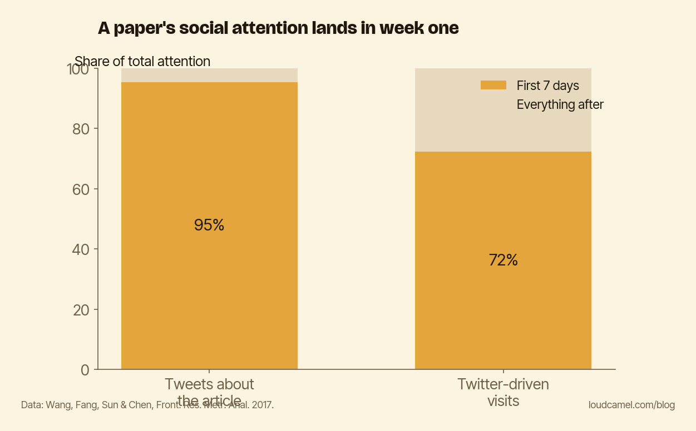

Your one-week spike: why posting once doesn't keep your work visible
You publish a paper. You post about it on the day it goes live. The likes come in, a few people share it, the numbers tick up, and it feels like the work landed.
Then comes day eight. This post is about what happens on day eight, and the short version is: nothing. A single launch post is a one-week event. It spikes, it decays, and your paper goes back to being invisible.
The attention arrives fast and leaves faster
Wang, Fang, Sun, and Chen tracked article-level referral data on PeerJ and matched it against the social-media chatter around each paper. Their results, in Frontiers in Research Metrics and Analytics in 2017, are blunt about how short the window is.
95.27% of the tweets about an article happen within the first seven days after publication. Only 5.73% come later, ever.
The visits follow the same shape. 72.30% of the article visits driven by Twitter arrive in that first week.
The authors put it plainly. Attention that comes easily also goes quickly, and social-media attention around a scholarly article does not last.

The chart above shows the shape of it. The overwhelming majority of an article’s social attention, somewhere between roughly 72% and 95% depending on whether you count tweets or actual visits, is packed into week one. After that the line drops to the floor and stays there.
Why the launch post fails
Here is the trap. The common move is to post once, on the day the paper drops. Everyone you reach in that window sees it, the numbers move, and it feels like enough.
Then the spike decays on schedule, exactly the way the data predicts. The people who were not online that week never see it. The people who were have moved on. Your single post bought you seven days of visibility and nothing after.
A launch post is not a visibility strategy. It is a visibility event, and the evidence says the event expires in about a week.
What lasts is not a bigger burst. It is a repeated one. You cannot beat a decay curve by making the first spike taller. You beat it by adding more spikes, spread out over time. If a single post’s reach lives in week one, then the only way to be visible in week six is to post again in week six.
What a cadence actually looks like
This does not mean posting every day or grinding out content. It means refusing to let one post carry the whole job.
Spaced touches work because each one catches a different slice of people, on different days, in different contexts. Three modest posts across three months will reach more relevant readers than one heavily promoted launch, simply because they are not all fighting for the same seven-day window.
Do this this week
Do not write a launch post. Write a launch plan.
Pick your most recent paper and schedule three spaced touches over the next three months. A plain-language thread now. A connection to a current debate in your field in a few weeks. A slide about it in your next talk later on.
Same paper, three windows, three different audiences. That is roughly the difference between a one-week spike and a presence. It is more work than posting once, which is exactly why almost nobody does it, and exactly why doing it stands out.